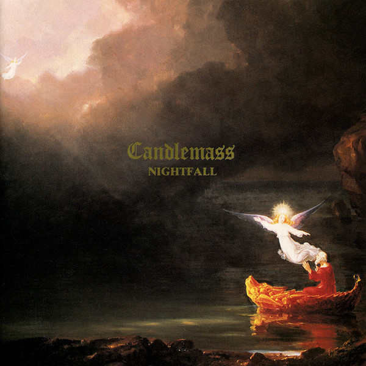
The Well of Souls
Candlemass
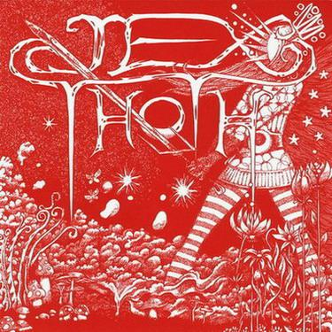
The Banishment
Jex Thoth
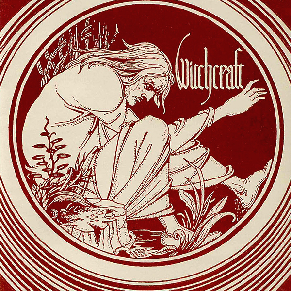
Witchcraft
Witchcraft
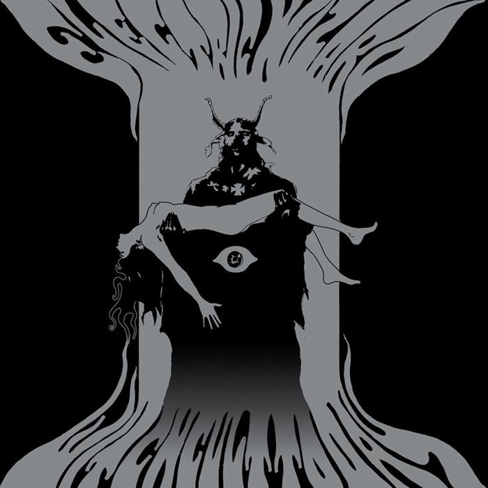
Dunwich
Electric Wizard
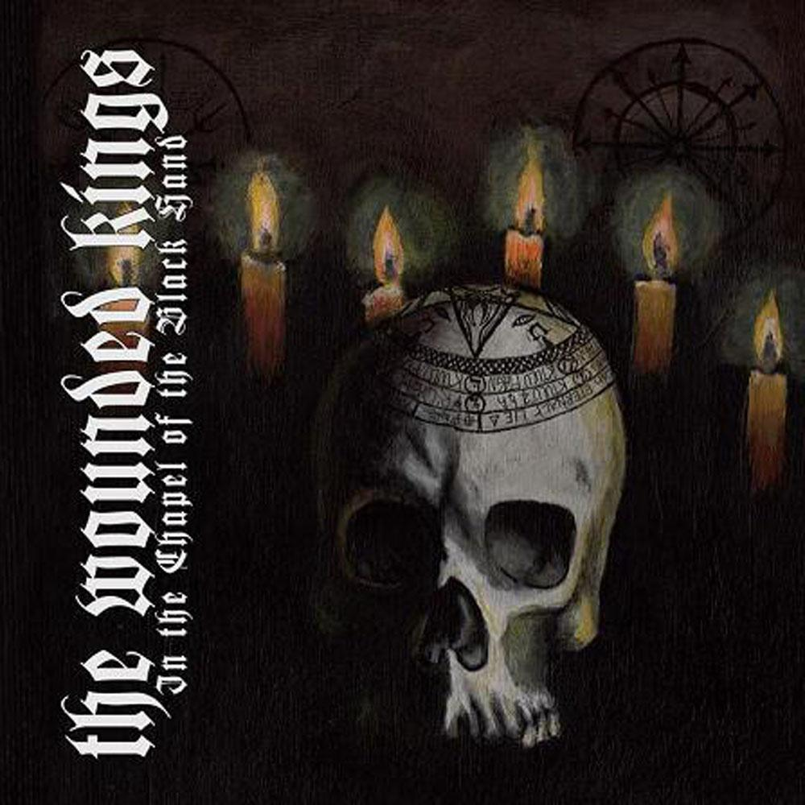
Gates of Oblivion
The Wounded Kings
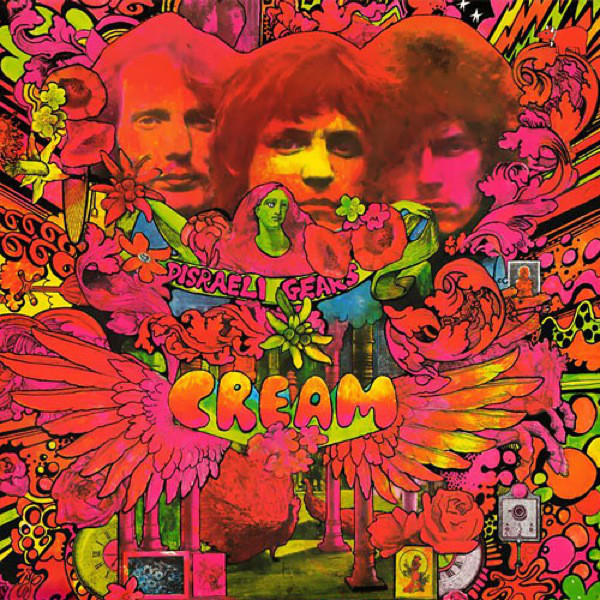
Sunshine of your Love
Cream
Into the Sun
Orchid
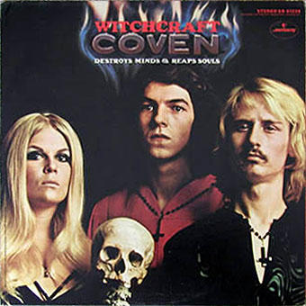
Black Sabbath
Coven
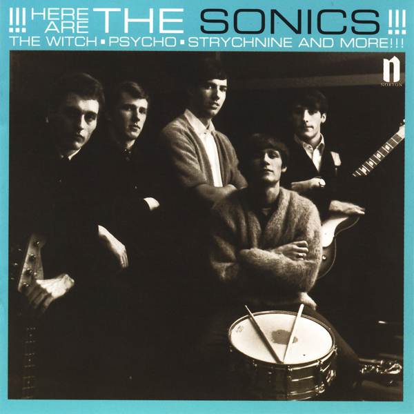
The Witch
The Sonics
Orchard
Windhand
Petrified
Pentagram
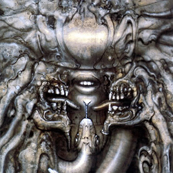
Heart of the Devil
Danzig
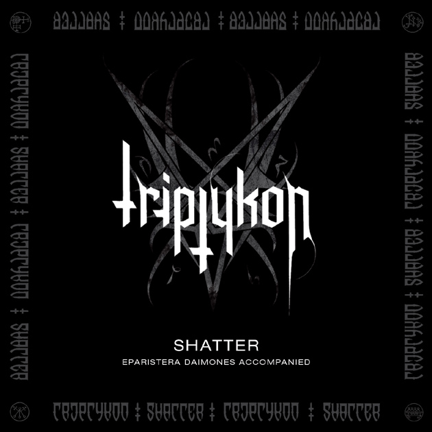
Shatter
Triptykon
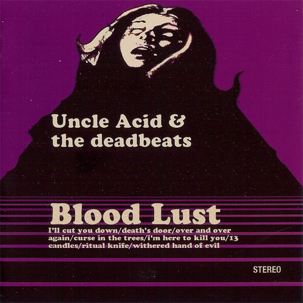
Ritual Knife
Uncle Acid and the Deadbeats
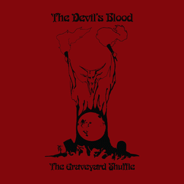
The Graveyard Shuffle
The Devil's Blood
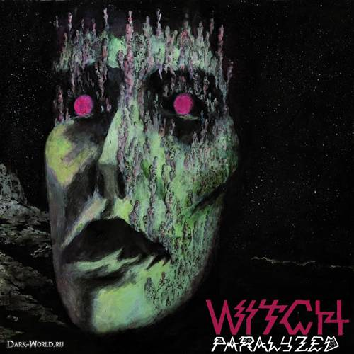
Old Trap Line
Witch
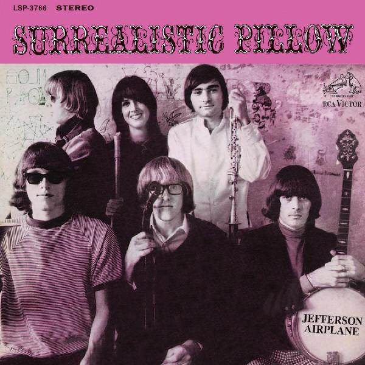
White Rabbit
Jefferson Airplane

This House is a Circus
Arctic Monkeys
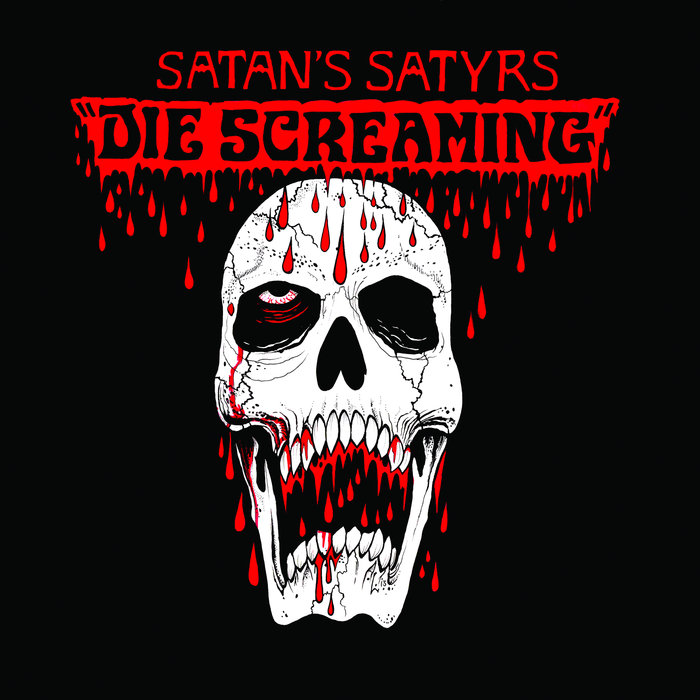
Black Souls
Satan's Satyrs
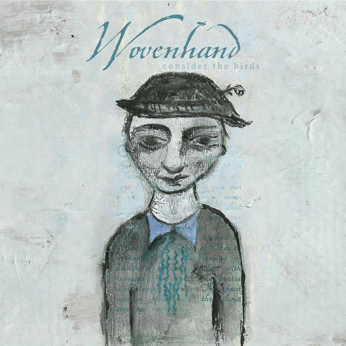
To Make a Ring
Wovenhand
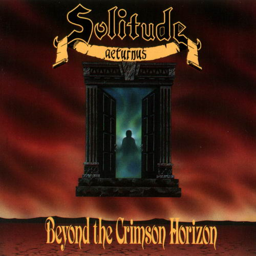
Seeds of the Desolate
Solitude Aeturnus
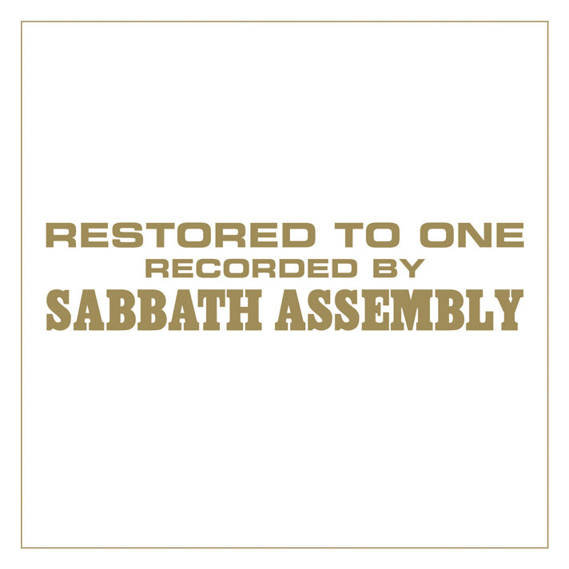
The Saints Shall Inherit the Earth
Sabbath Assembly